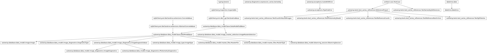
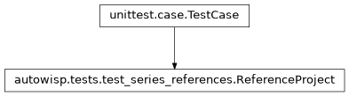
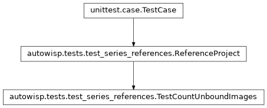
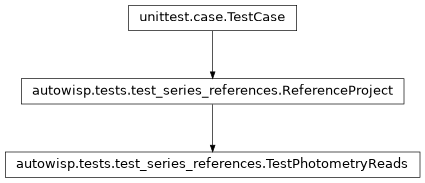
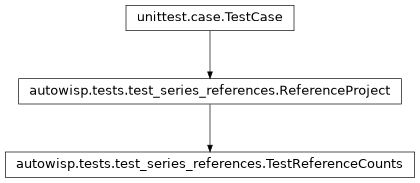
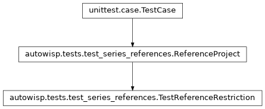
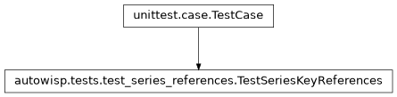
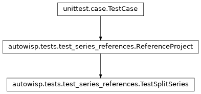

autowisp.tests.test_series_references module
Class Inheritance Diagram

Tests for splitting a series by the photometric reference its images used.
A diagnostic fit_magnitudes produces depends on the reference an image
was fit against as well as on the image, so a series reading one is
restricted to the images bound to one reference in each channel it reads it
in. These cover the key carrying those references, the restriction and the
guard refusing to read magfit diagnostics without one, and finding which
reference populations a session holds.
The fixture is one night fit against two references, ref1 and ref2,
in both of its channels, R and B: the first three frames against
ref1, the next two against ref2, one frame against ref2 in R
but ref1 in B – rare, and exactly what a split has to keep apart –
and a last frame magfit-ed but bound to nothing, as processing before every
magfit-ed image was bound could leave one. The magfit diagnostic is recorded
per photometry, as fit_magnitudes records it, in two apertures, with one
value missing in one of them only.
- class autowisp.tests.test_series_references.ReferenceProject(methodName='runTest')[source]
Bases:
TestCase
The fixture the classes below share, holding no tests of its own.
Its own project rather than the shared one: references, bindings and magfit diagnostics there would change what every other series test sees.
- classmethod _add_night(db_session, label, *, day, backgrounds, offsets, bound_to, unrecorded=None)[source]
Add a night of object frames, with their diagnostics and bindings.
The diagnostic, image and master types and the references must be in the database already. Provenance foreign keys are left dangling.
- Parameters:
db_session – An active SQLAlchemy database session.
label (str) – Names the session, and its frames’ files.
day (int) – How many days after the first night it is.
backgrounds (list) –
bg_centerinRper frame, which also says how many frames there are.offsets (dict) –
{channel: [photometry_mag_offset, ...]}per frame in aperture 0, recorded in every photometry ofshifts, each shifted by its own amount.bound_to (dict) –
{channel: [reference, ...]}: the name of the reference each frame is bound to, orNone.unrecorded (tuple) –
(channel, frame, photometry)of an offset to leave out, if any.
- Returns:
int: The id of the session.
list: The ids of its images, in frame order.
- Return type:
- classmethod _fill_database()[source]
One night of seven object frames in two channels, two references.
Provenance foreign keys, and the master type’s condition, are left dangling, as SQLite does not enforce them and nothing here reads them.
- backgrounds = [100.0, 101.0, 102.0, 103.0, 104.0, 105.0, 106.0]
bg_centerinR, which does not depend on the reference.
- bound_to = {'B': ['ref1', 'ref1', 'ref1', 'ref2', 'ref2', 'ref1', None], 'R': ['ref1', 'ref1', 'ref1', 'ref2', 'ref2', 'ref2', None]}
The reference each frame is bound to, per channel;
Nonefor the frame magfit-ed but bound to nothing. The sixth is bound differently in the two channels.
- key(channels, *references, photometries=())[source]
Return the night’s series binding channels to references.
Each reference is
"ref1","ref2"orNone, per slot, and is looked up in that slot’s channel. What is read, and in which photometry, is up towanted; the key’s photometries only name the series.
- offsets = {'B': [4.0, 5.0, 6.0, 30.0, 40.0, 60.0, 98.0], 'R': [1.0, 2.0, 3.0, 10.0, 20.0, 50.0, 99.0]}
photometry_mag_offsetper channel and frame, distinct everywhere so that a value landing on the wrong image cannot pass by luck.
- selected(values, **references)[source]
Return the values of the frames bound as references say.
- Parameters:
values (list) – One entry per frame, in order.
references –
channel=referencefor every channel the frames have to be bound in,referencepossiblyNone.
- classmethod setUpClass()[source]
Hook method for setting up class fixture before running tests in the class.
- shifts = {0: 0.0, 2: 1000.0}
The photometries the offsets are recorded in, each shifted by its own amount so that a read in the wrong one cannot pass by luck: aperture 0 as above, aperture 2 a thousand higher.
- classmethod tearDownClass()[source]
Hook method for deconstructing the class fixture after running all tests in the class.
- unrecorded = ('R', 1, 2)
(channel, frame, photometry)of the one offset not recorded, asfit_magnitudesskips a non-finite one: in one photometry only.
- class autowisp.tests.test_series_references.TestCountUnboundImages(methodName='runTest')[source]
Bases:
ReferenceProject
The frames a split leaves out, for want of a binding.
- count(key, wanted, expressions=None)[source]
Return
count_unbound_images(), in a session of its own.
- class autowisp.tests.test_series_references.TestPhotometryReads(methodName='runTest')[source]
Bases:
ReferenceProject
A per-photometry diagnostic, read in the photometry each read binds.
- class autowisp.tests.test_series_references.TestReferenceCounts(methodName='runTest')[source]
Bases:
ReferenceProject
What the series table offers and counts: per reference, per photometry, and per bound row.
- colour_reads = {('photometry_mag_offset', 'B', 0), ('photometry_mag_offset', 'R', 0)}
What a row comparing the two channels’ offsets in aperture 0 reads.
- test_a_bound_row_counts_its_photometries()[source]
R’s offset in either aperture, with B’s in 0 and R’s background.
Aperture 2 draws one frame fewer: the one whose offset it did not record in R. The background, recorded per image, is required beside the offsets, recorded per photometry.
- test_a_bound_row_counts_what_it_draws()[source]
For each reference population, the images its series reads.
Unrestricted, the count is the whole night, the frame bound to nothing included, which no population holds.
- test_both_tables_are_recorded()[source]
The offset, recorded per photometry, is offered like the rest.
- test_options_are_counted_per_photometry()[source]
Every frame in both apertures, and once each.
A frame recorded in two channels is still one image per aperture. The frame aperture 2 did not record in R records it in B, and so is counted there: which channel it is read in is for the channel columns to decide.
- class autowisp.tests.test_series_references.TestReferenceRestriction(methodName='runTest')[source]
Bases:
ReferenceProject
A key naming references reads only the images fit against them.
- test_a_magfit_read_needs_a_reference()[source]
Without one, the series would mix the night’s two references.
- test_a_quoted_read_takes_its_reference_from_a_tail_slot()[source]
The quoted channel binds nothing, but still needs its reference.
The quantity takes no parameter, so its only slot is the tail one for the channel it quotes.
- test_a_quoted_read_without_its_slot_is_refused()[source]
No tail slot means no reference for the quoted channel.
- test_a_reference_is_needed_in_every_channel_read()[source]
One in R does not cover the magfit read in B.
- test_a_reference_restricts_what_does_not_need_one()[source]
The background of the frames fit against ref2, say.
- test_an_aggregate_sees_one_reference()[source]
A median taken over both references would be neither’s.
- class autowisp.tests.test_series_references.TestSeriesKeyReferences(methodName='runTest')[source]
Bases:
TestCase
What a key accepts for its references, and what it makes of them.
- test_a_channel_carries_one_reference()[source]
A slot left None takes the reference another slot on its channel has.
What makes a producer filling only the slots that read magfit build the same key as one filling every slot on the channel.
- test_coerced_to_a_hashable_key()[source]
References and photometries posted as lists of strings still make a usable key.
- test_omitted_is_none_in_every_slot()[source]
A key built as before equals the one spelling the Nones out.
- test_references_and_photometries_by_keyword_only()[source]
Both are tuples of ids, so one in the other’s place is refused rather than read wrongly.
- class autowisp.tests.test_series_references.TestSplitSeries(methodName='runTest')[source]
Bases:
ReferenceProject
Finding the reference populations a session holds.
- colour = {'colour': 'photometry_mag_offset[0][0] - photometry_mag_offset[1][0]'}
Read in both channels, so split by the references of both.
- split(key, wanted, expressions=None)[source]
Return
split_series()for key, in a session of its own.
- test_a_frame_fit_differently_per_channel_is_its_own_population()[source]
Split by R and B, the frame fit against ref2 and ref1 stands alone.
Neither with the frames fit against ref1 in both channels, nor with those fit against ref2 in both: an aggregate over either would mix references in one of its channels. And only combinations some frame has come back – never ref1 in R with ref2 in B.
- test_a_quoted_channel_is_split_in_its_tail_slot()[source]
With the slot there, it splits like any other.
- test_a_reference_the_key_names_is_kept()[source]
Pinned to ref1 in B, the split of R meets both of R’s references.
The frames fit against ref1 in B include the one fit against ref2 in R, so the split within them is not the same as pinning R too.
- test_each_key_draws_its_own_population()[source]
What the engine does with the keys: one evaluation each.
- test_every_slot_on_a_split_channel_gets_its_reference()[source]
The background slot shares the offset slot’s channel, R.